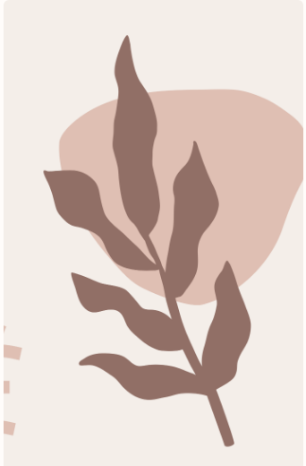

Discover The Enchantment Of Wales,
Right From The Tip Of Your Tongue.
Welsh Recipes: A Culinary Journey
Through Wales
Welcome to the world of Welsh cuisine, with regional delicacies as diverse as the beautiful landscapes that inspire them.
Discover a treasure trove of flavors from coastal towns to rolling hills, with recipes that will leave you craving for more. Click the boxes for recipe!
Popular Welsh Dishes and Ingredients
Laverbread
A traditional Welsh food made from seaweed which is often served with cockles and bacon for breakfast.
Faggots and Peas
A hearty dish of pork meatballs and peas bound in a rich gravy. A true taste of Wales.
Welsh Cakes
A sweet, spiced cake that is best served with adollop of clotted cream and a cup of tea.
Recipes from South & North Wales
Cawl
A soup made with local produce and meat. Perfect for cold winter nights.
Rarebit
A savory dish of melted cheese, ale and mustard served over slices of toasted bread.
Braised Welsh Lamb
A comforting and hearty dish made with slow-cooked lamb and root vegetables.
Bara Brith
This traditional fruit loaf is made with dried fruit that has been soaked in tea for maximum flavor.

Traditional Welsh Desserts and Drinks
Welsh Rarebit Ice Cream
This unique dessert combines the flavors of Welsh rarebit and ice cream for a refreshing end to any meal.
Bara Brith Trifle
Layers of sweet, fruit-filled cake and creamy custard make this dessert a winner
Laverbread Martini
This unconventional cocktail is made with laverbread and vodka for a salty, savory flavor.
.png)